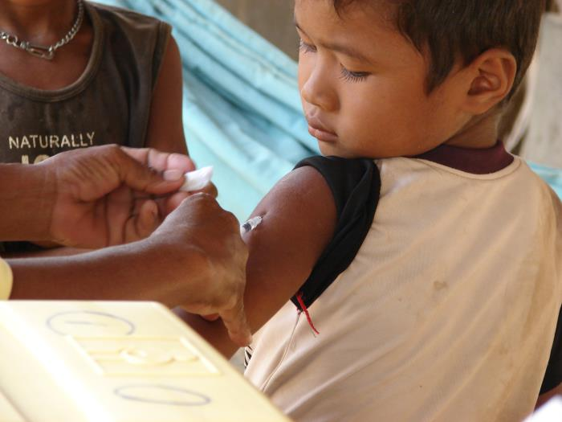
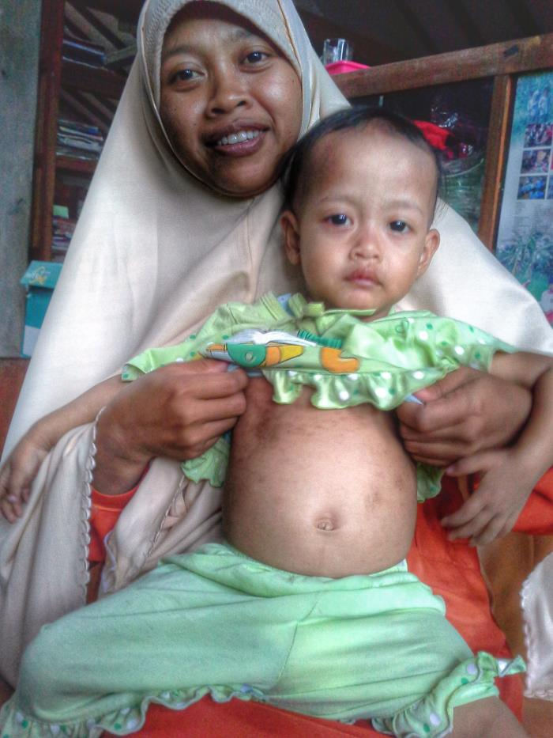

Kasus campak Indonesia melonjak 46 kali lipat setelah pandemi
Penyakit yang bisa dicegah, mengapa campak masih naik di Indonesia?
Big ideaCampak kembali naik seiring cakupan dosis kedua yang belum merata. Kalau lajunya tetap, target 90% baru tercapai sekitar 2032, padahal Vietnam dengan pendapatan setara sudah mencapai 95%.

Sumber kartu: Kemenkes, rilis 26 Februari 2026; jumlah KLB dari Antara. Sumber dan definisinya berbeda dari grafik WHO di bawah, jadi angkanya tidak disambung.
Lihat tabel data
Sumber: WHO, kasus campak yang dilaporkan, 2016–2024. Data 2025 belum tersedia.
Apa artinya
- 1Apa yang terjadiSetelah turun ke 394 kasus pada 2021, kasus naik ke 18.063 pada 2023: 64,2 per 1 juta penduduk, hampir dua kali gabungan ASEAN (33,8).
- 2Mengapa pentingLonjakan belum selesai. Kemenkes mencatat 116 KLB sepanjang 2025, dan campak menular sangat cepat di kelompok anak yang belum terlindungi.
- 3Pertanyaan berikutnyaKalau vaksinnya ada, mengapa perlindungannya bocor? Jawabannya ada di cakupan dosis kedua.

Wajah campak di IndonesiaRuam khas campak pada anak saat KLB di sebuah pesantren di Sleman, 2015. Foto: CDC/Edy Purba
Dosis kedua cenderung naik, tapi belum pernah menyentuh 95%
Satu dosis vaksin campak belum cukup. Perlindungan penuh butuh dua dosis, dan di situlah Indonesia tertinggal.
Dosis pertama jalan di tempat, dosis kedua naik pelan
Cakupan imunisasi campak Indonesia (%), WUENIC revisi 2025. Garis putus-putus biru: garis tren regresi MCV2.
Lihat tabel data
Mengapa harus dua dosis?
Vaksinnya bekerja. Celahnya ada pada anak yang tidak kembali untuk dosis kedua. Sumber angka efektivitas: CDC, dikutip NBC Chicago. Foto: CDC/C. S. Goldsmith, W. Bellini.
Pendapatan berkaitan kuat dengan cakupan, tapi bukan penghalang
PDB per kapita (USD, skala log) vs cakupan MCV2, 11 negara ASEAN, 2025. Garis lengkung: cakupan yang diharapkan untuk tiap tingkat pendapatan.
Lihat tabel data
Vietnam 18,7 poin di atas harapan; Indonesia hanya +1,7
Selisih cakupan MCV2 aktual dengan cakupan yang diharapkan dari pendapatannya (poin), 2025.
Indonesia berada di posisi yang wajar untuk pendapatannya. Yang luar biasa adalah Vietnam: pendapatan hampir sama (USD 5.066 vs 5.060), cakupan 95%.
Korelasi menunjukkan keterkaitan, bukan sebab-akibat. Sumber: WHO/UNICEF WUENIC revisi 2025; PDB per kapita dari asean_tahun.csv.
Provinsi di Jawa-Bali lebih terlindungi: median 72,6% vs 63,6%
Celahnya tidak merata. Empat provinsi masih di bawah 50%, dan tiga terendah tertinggal jauh dari yang lain.
Sebaran geografis capaian imunisasi balita per provinsi (BPS 2025). Arahkan kursor untuk melihat nama wilayah, atau klik provinsi untuk mengunci data detail.
10 provinsi dengan cakupan imunisasi campak terendah (survei BPS 2025). Seluruh 38 provinsi dapat dilihat pada tabel data di bawah.
Lihat tabel data
Dengan laju sekarang, dosis kedua baru mencapai 90% sekitar 2032
Target Immunization Agenda 2030 untuk MCV2 adalah 90%. Ambang kekebalan kelompok untuk campak adalah 95%.
Garis tren melewati 2030 sebelum menyentuh target
Cakupan MCV2 Indonesia (%): aktual 2016–2025 dan perpanjangan garis tren sampai 2036, dengan pita ketidakpastian 95%.
Skenario, bukan ramalan. Pada 2030, cakupan bisa di mana saja antara 68% dan 100% menurut pita ketidakpastian.
Lihat tabel data
Bagaimana kalau lajunya dipercepat?
Mulai dari nilai garis tren 2025 (76,3%). Geser untuk mengubah kenaikan per tahun; garis putus-putus gelap di grafik ikut berubah.
Pembanding dari data: garis tren 2016–2025 naik 2,1 poin per tahun. Kenaikan tahunan terbesar adalah +13 poin (2023 ke 2024), tetapi turun lagi 4 poin pada 2025.
Kejar dosis kedua
Selisih dosis pertama dan kedua Indonesia masih 7 poin pada 2025 (85% vs 78%). Anak yang sudah datang untuk dosis pertama perlu dipastikan kembali.
Imunisasi kejar di provinsi terendah
Prioritaskan Aceh (27,8%), Papua Pegunungan (36,7%), dan Sumatera Barat (43,5%).
Belajar dari Vietnam
[Diisi tim: strategi Vietnam mencapai 95% dengan pendapatan setara Indonesia, beserta sumbernya.]
Campak bisa dicegah. Yang dibutuhkan adalah dua dosis untuk setiap anak, di setiap provinsi.
Sumber: WHO/UNICEF WUENIC revisi 2025; proyeksi dihitung tim dengan regresi linear 2016–2025. Target 90%: Immunization Agenda 2030.
Foto: CDC Public Health Image Library, untuk penggunaan pendidikan dengan atribusi — ID 19438 (Margaret Hercules), ID 10707 (Cynthia S. Goldsmith; William Bellini), ID 19665 (Edy Purba).